Introduction
The following guide will show you how to export a skinned model from Maya to Torque. This applies to any model that uses joints to animate, including characters and weapons. The tutorial will assume that the reader is familiar with modelling and texturing in Maya and so won’t go into detail on those topics. The tutorial also assumes that the maya2dts plug-in and DTS Utility have been installed. For information on downloading and installing the plug-in, please go to the Setup Document.
The screenshots in the guide were taken using Maya 7, but should apply to most Maya versions.
A PDF version of this guide can be download here.
Acknowledgments
Infinite thanks to Dave MacIsaac for his immense help in getting my Maya models to export after more than a week of battling with it on my own!
The basic steps
Creating a character for Torque involves a 18-step process:
1. Set up Maya’s workspace to work with Torque
2. Create you character model
3. Triangulate your model
4. Freeze transformations on all geometry
5. Delete model history
6. UV mapping the model
7. Create LOD meshes (optional)
8. Naming the model parts for LOD identification
9. Rigging and skinning your model
10. Adding special nodes
11. Adding collision meshes and LOS meshes
12. Embedding your model in the Torque hierarchy
13. Registering any LOD meshes
14. Modifying the hierarchy
15. Creating a bounding box
16. Animating the model
17. Creating a configuration file
18. Exporting the model
Set up Maya’s workspace to work with Torque
The first step needed before creating your model is to set up Maya’s workspace so that its units and axis match those used by Torque. To do so, load up the DTS Utility, then in the DTS Utility menu select Setup-->Set All Units
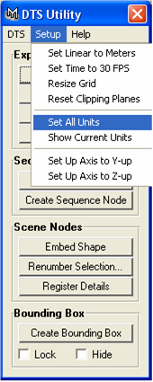
You will see Maya’s grid resize and the axis change orientation.
Create your character model
You are now ready to create your character’s geometry. Note: When modelling your character, ensure that it follows the Torque axis system i.e.: Z axis is up, Y axis is forward and X axis is right. If your character appears oriented incorrectly in game, the model will most likely be incorrectly oriented in Maya.
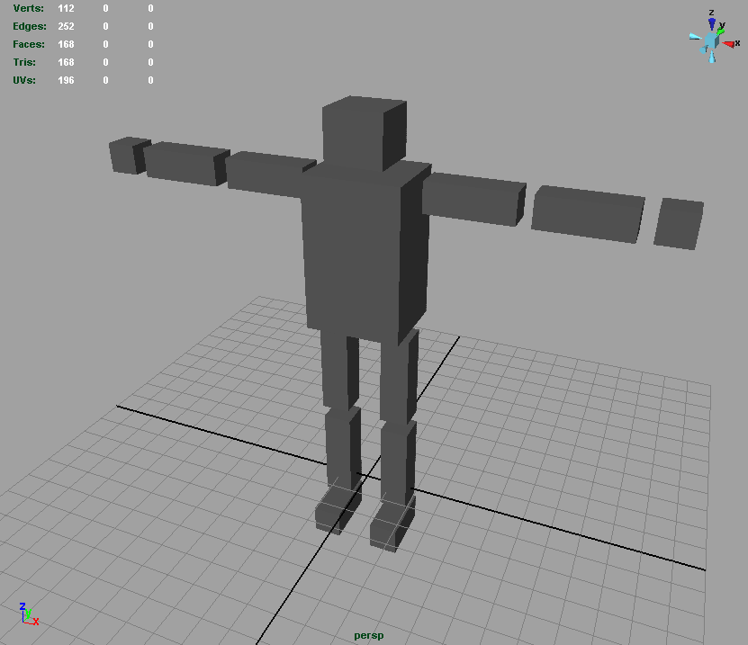
Triangulate your model
All models used by Torque have to be triangulated. To do that, select all your geometry, then in the menu select Polygons-->Triangulate
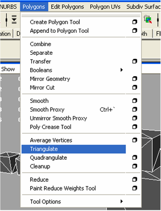
Freeze transformations an all geometry
Select all your geometry, then select Modify-->Freeze Transformations-->Box
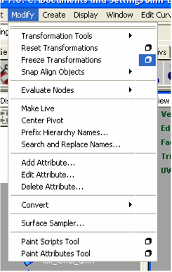
In the dialog box that appears, select Edit-->Reset Settings to freeze transformations on you geometry’s position, rotation and scale information, then click on Freeze Transform.
Delete model history
This step is important as it gets rid of a lot of unnecessary information which would otherwise be exported and could cause problems.
Select your geometry then select Edit-->Delete by Type-->History
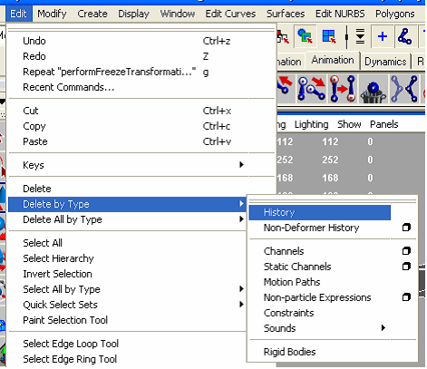
UV mapping the model
With the main model geometry complete, now is a good time to UV map the model.
Create LOD meshes (optional)
LOD meshes are low poly versions of the main model that Torque displays instead of the main model when the model is far away from the camera. A simple way to create LOD geometry is to select your main model, duplicate it in the same position, then select Polygons-->Reduce.
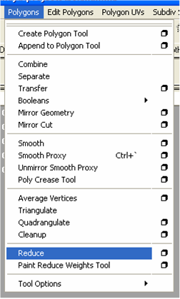
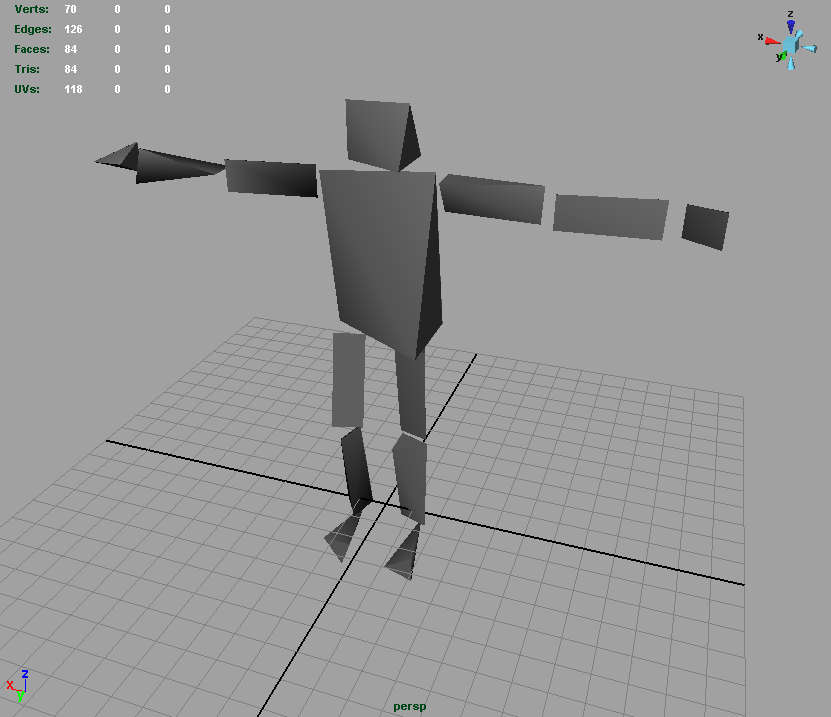
(Note: The above image shows only the reduced model – the main model has been hidden to take a screenshot)
After creating all the LOD meshes you need, don’t forget to triangulate, freeze transformations and delete history. If you have already UV mapped your main model, then you will not need to UV map the LOD meshes.
Naming the model parts for LOD identification
Note: in previous versions of this guide, the LOD section was incorrectly written and the images in the guide reflected this incorrect information. The corrections have been made in this section, but the images have not been updated.
In order to tell the exporter the order in which we want out LOD meshes to be displayed in the game, we add a number to the end of the name of each mesh. The number indicates the minimum size of the object, in pixels on the screen, that this LOD will be drawn.
For example, let's say we have 3 LOD in our model and have called them mesh300, mesh150 and mesh0. Mesh300 will be drawn when the object is 300 pixels or greater. Mesh150 will be drawn when the object is between 150 and 300 pixels in size. Mesh0 will be drawn when the object is less than 150 pixels in size.
It is important to note that if we did not have mesh0, then the object would not be drawn at all when it was smaller than 150 pixels in size.
If you have just 1 mesh and no LOD, you still need to add a number to the names of the parts and this number should be 0, so that your object is drawn all the time.
Rigging and skinning your model
Now that the model geometry is complete, you are ready to rig and skin the model.
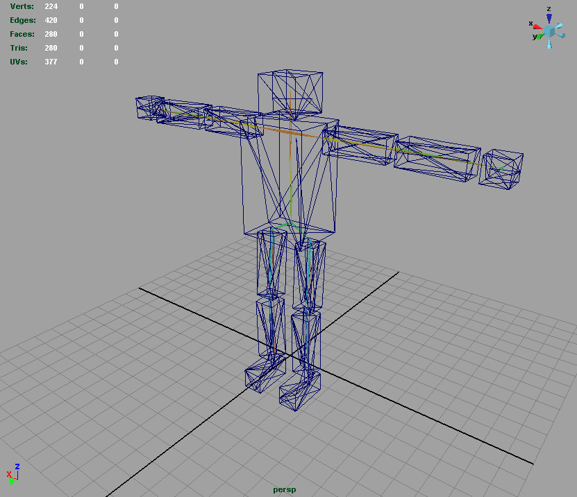
Torque supports Smooth Binding. When binding the skeleton to the mesh, don’t forget to bind it to the LOD meshes too.
Adding special nodes
The next step involves adding Torque-specific nodes: eye and cam nodes and mount points. To add these, open the DTS Utility and select DTS-->Utility Nodes then select the required node.
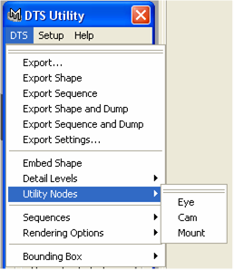
Place the nodes in their required positions and orient them correctly. Take note of the nodes’ axis: in Torque, z is up, y is forward and x is right.
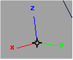
After creating and placing your nodes, you may need to parent some of the nodes to joints on your skeleton (e.g.: a mount point to a hand) so that they move with the skeleton. To do this select the joint you want to parent to first, then select the utility node and select Constrain-->Parent-->Box from the animation menu
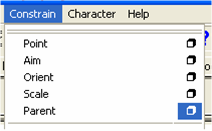
In the dialog box that appears, select Edit-->Reset Settings, then click on Add
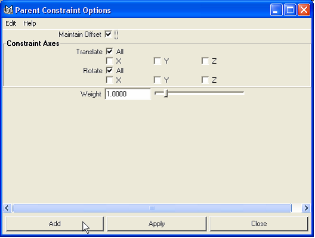
Repeat this for all utility nodes that need to be parented.
Adding collision meshes and LOS meshes
Note: this section does not apply to player objects, as their collision meshes are generated in script.
In order for your model to collide with the game world, you need to add collision meshes to the model. However, if you want your object to respond to ray cast tests (and as a result of that, projectile collisions), then you will also need to add LOS meshes to your model.
Both these types of collision meshes need to be convex shapes. Also, it is recommended that these meshes be as simple as possible, since collision detection is an intensive process.
A model can have up to 9 collision meshes, named Col_1 to Col_9, and 7 LOS meshes, called LOScol_9 to LOScol_15.
After adding collision and LOS meshes, triangulate them.
Embedding the model in the Torque hierarchy
Load up the DTS Utility, select all your meshes (including LODs, but not the skeleton) then click on the Embed Shape button.
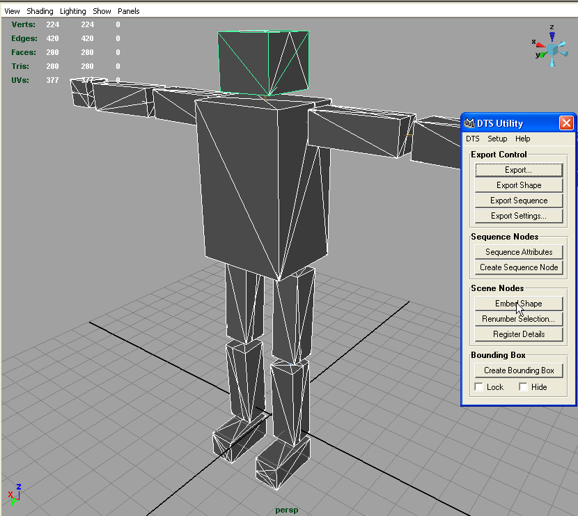
This creates a hierarchy which is used by the DTS format and places your geometry in it.
Registering any LOD meshes
With your geometry still selected, click on Register Details.
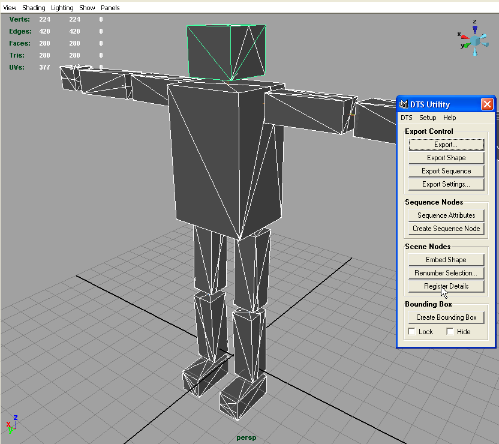
The exporter will examine the meshes in your model and create detail markers for each LOD it identifies, named detailX, where X is the detail level.
If you have any collision or LOS meshes, then the exporter will also create detail markers in your hierarchy corresponding to the numbers at the end of the collision and LOS mesh names. These must be renamed to Collision_X for collision meshes and LOS_X for LOS meshes, where X is the number of the mesh the marker represents.
Modifying the hierarchy
Open up your Hypergraph (Window-->Hypergraph) or Outliner (Window-->Outliner) window (whichever you prefer working with)
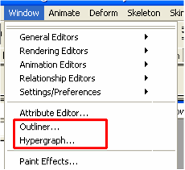
At this stage, your Hypergraph should look similar to this one:
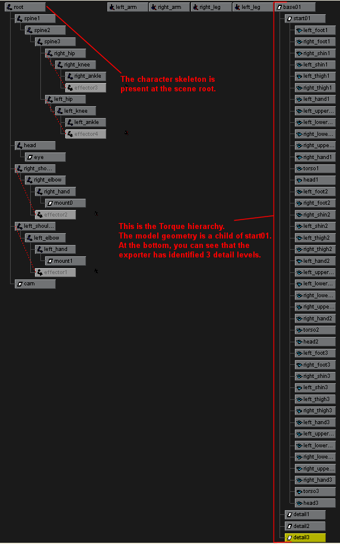
The Outliner would look like this:
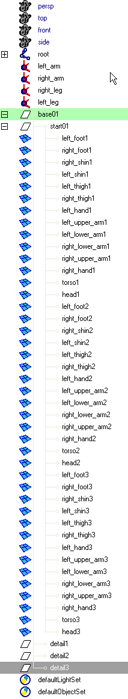
This hierarchy needs to be modified before we can export the model. We are going to remove the geometry from the start01 node and place it at the scene root, and then we are going to put the skeleton in its place.
Firstly, select all the geometry under start01 in the Hypergraph/Outliner, then drag it all to the scene root using your middle mouse button. Next, select your skeleton and drag it onto the start01 node using your middle mouse button. Your Hypergraph should now look similar to the following:
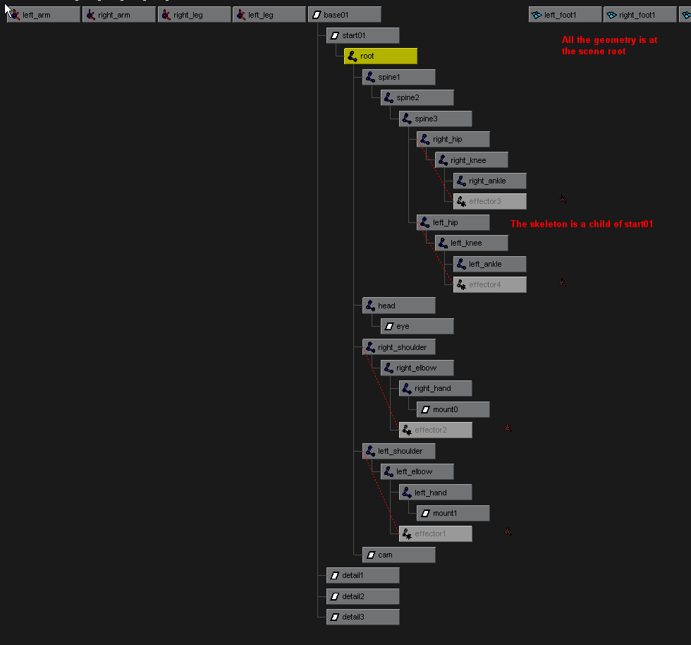
The Outliner would look like this:

Note that IK handles are not moved into the start01 node.
Creating a bounding box
The next step is to create a bounding box. To do this, open the DTS Utility, select all your character geometry and click on Create Bounding Box
This creates a bounding box around your character model. Tick the Lock checkbox so that the bounding box does not occlude your model. Resize the bounding box so that it encompasses all the model geometry at all stages of its animation. You may need to do this after you animate your model.
Animating the model
Animation in Torque can be done in two ways. The first is where the model and animation data are both stored in a single DTS file. The second method is where the model is stored in the DTS file and each animation is stored in a separate DSQ file.
Model and animation data in single DTS file
This section assumes that you have already created the animations for your model.
To export animations, you need to create what is called a sequence node. You then modify the properties of the sequence node to correspond to the animation it is supposed to represent.
To create a sequence node, open the DTS Utility and click on Create Sequence Node
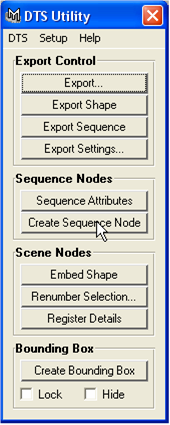
This will create a sequence node at the centre of the scene.
Now select the sequence node then open up the Channel Editor
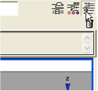
The properties for the selected sequence node are displayed
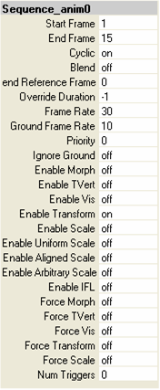
By default, the DTS Utility gives sequence nodes a name of Sequence_animX, where X is a number. To change the name of the sequence node, replace the animX section with the name you require, for example Sequence_wave would create an animation called wave in Torque. Note that the Sequence_ prefix must be present in the node name.
The properties of the sequence node need to be modified to match the animation it represents. For example, if a character has a wave animation that is present in frames 10-45 in the Maya scene, you would modify the attributes of the sequence node so that its Start Frame is 10 and its End Frame is 45. Other properties can be modified too, for example if Cyclic is on, then the animation will repeat indefinitely, otherwise it will play once and stop.
For each animation in your model file, place one sequence node for that animation, name it properly and change its properties to match that particular animation.
The model is now ready to be exported.
Model and animation in separate DTS and DSQ files
If you want to export your animations as separate DSQ files, you need to save each animation as a separate Maya file. Then in each file create one sequence node, name it and modify its properties to match that animation (as described in the above section), and then export the DSQ.
For example, to export the wave animation of a character as a DSQ file, you would first save a copy of the main model file. In the new model file, create the wave animation. Then create a sequence node and name it Sequence_wave and modify its properties to match the wave animation. The wave animation is now ready to be exported as a DSQ file.
Repeat the above steps for each animation.
Creating a configuration file
The last step before exporting a model is to create a configuration file. In the configuration file, list all the utility nodes (eye, cam, mount) and all the joints that are present in the model so that the exporter will export them.
The configuration file’s name must be in the form mayafilename.cfg. For example, if a character model is stored in the Maya file boxman.mb, its corresponding configuration file would be called boxman.cfg.
The contents of a configuration file should look similar to this:
| AlwaysExport: | The file should start with this. | |||||
| Eye | List all the utility nodes and joints | |||||
| Cam | that you want to export. | |||||
mount0
mount1
root
spine1
spine2
spine3
right_hip
right_knee
right_ankle
left_hip
left_knee
left_ankle
head
right_shoulder
right_elbow
right_hand
left_shoulder
left_elbow
left_hand
| -Param::CollapseTransforms | The file should end with this. |
The configuration file needs to be written using a text editor capable of saving the file with UNIX line endings. Once such editor is SuperEdi, a free text editor, which can be downloaded from http://www.wolosoft.com/en/superedi. The following screenshot shows how to save the configuration file with UNIX line endings in SuperEdi:
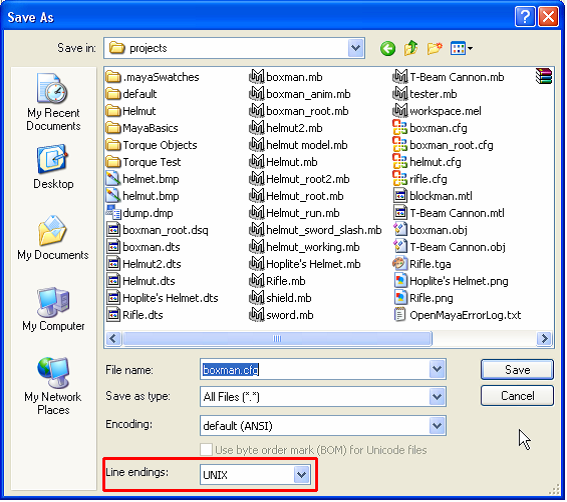
Once the file has been written, save the file in the same directory as your model file.
Note: If you are exporting your model as separate DTS and DSQ files, then only the main model scene needs a configuration file. However, if you find that animations are not exporting correctly then create a configuration file for each of the animation scene files. The configuration file for these is identical to the one used by the main model file; all that is needed is to name the configuration file correctly.
Exporting the model
Depending on how you set up the animations for your model, you will either export the model and animations as one DTS file, or you will export the model as a DTS file and each animation as a separate DSQ file.
Exporting all as one DTS file
To export the model as one DTS file, the model and all animation data must be present in a single Maya scene file. This section assumes that you have built and animated your model, and created and configured all the required sequence nodes for your animations.
Open up the DTS Utility and select Export…
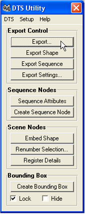
In the dialog box that appears, select a name for your model file and make sure that Files of type is set to exportDTS
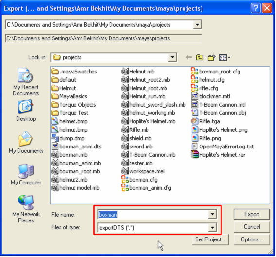
You should see the model playing through its animations and then the export will be completed.
The model can now be viewed in the Show Tool or used in Torque.
Exporting model and animation as separate DSQ files
First open up the main model file. This file should contain the model and skeleton and no sequence nodes. Export the model in the same manner as above.
Next open up one of the animation scene files. This file should contain the model and one sequence node. Open the DTS Utility and select DTS-->Export Settings…
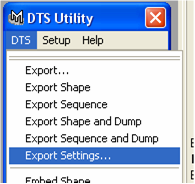
In the dialog that appears, modify the Sequence Name and Sequence Location text boxes to determine where you want to save your DSQ file, then click on Close
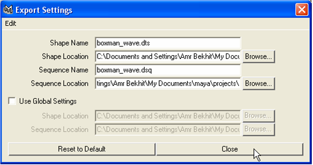
Finally, in the DTS Utility, select Export Sequence
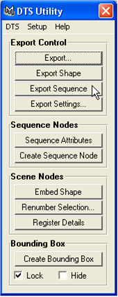
You should see the model playing through its animation and then the DSQ export will be completed.
Repeat the above steps for each animation you need to export.
About the guide
This guide was written due to the lack of detailed information in one place on this subject. I hope that you have found the guide useful, and if there are any queries or suggestions please feel free to contact me by email: